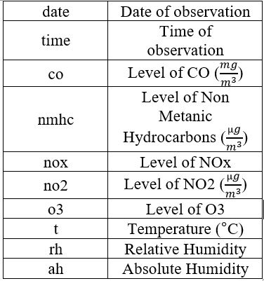

Project
Ramin Ala
Introduction
This post consists of a bit of data clean up and exploratory analysis of a dataset available in University of californium, Irvine’s website.
Data: Air Quality in an Italian city
The dataset includes 15 variables and 827 observations that represent air quality within an Italian city and in a significantly polluted area. level of CO, Non Metanic Hydrocarbons, Benzene, Total Nitrogen Oxides (NOx), and Nitrogen Dioxide (NO2) measured. Relative and absolute humidity are among variables.
This table shows important variables and their definition.

This dataset is available in the below link:
Corrolation between air quality and temperature

It seems that temperature does not have abigh impact on the air quality. However, apart from nox, levels of all other pollutant is slightly increase by increasing temperature.
Corrolation between air quality and absolute humidity

There are different data for relative and absolute humidity. Note absolute humidity is the measure of water vapor (moisture) in the air, regardless of temperature. Relative humidity also measures water vapor but RELATIVE to the temperature of the air. Trend of change is interestingly to big extent like temperature.
average pollution by time of the day

This plot show the average pollution in terms of time of the day. There are two picks in the level of pollutuon. First, 8 Am and the second 7 pm. Both of these hours are rush hours with lots of traffic. General intuition has always been that there is least air pollution at night because there are fewer cars on the road and fewer factories humming at that time of day.
Goal: Predict level of nox pollutant from no2
Specify model and Set model fitting engine
## Linear Regression Model Specification (regression)## Linear Regression Model Specification (regression)
##
## Computational engine: lmActual points and the linear fitting

Fit model & estimate parameters
## parsnip model object
##
## Fit time: 0ms
##
## Call:
## stats::lm(formula = nox ~ no2, data = data)
##
## Coefficients:
## (Intercept) no2
## 2202.6401 -0.7743Model outputs
## # A tibble: 2 x 5
## term estimate std.error statistic p.value
## <chr> <dbl> <dbl> <dbl> <dbl>
## 1 (Intercept) -2.13 14.8 -0.144 0.886
## 2 no2 0.756 0.00911 83.0 0Numerical Example
According to available data and linear fitting, What level for Nox is expected if no2 is 2500?
Nox= -0.7743no+2202.6401= -0.77432500+2202.6401= 266.8901
Summary
According to data visualization in this report, Pollution is a loose function of temperature and humidity but it depends on the time of day. It concluded that level of pollutant is higher at the start and finish of working hours when people are using personal cars to get office/home. Other aspect of this report is prediction of level of nox pollutant when no2 level in known using a simple linear regression.